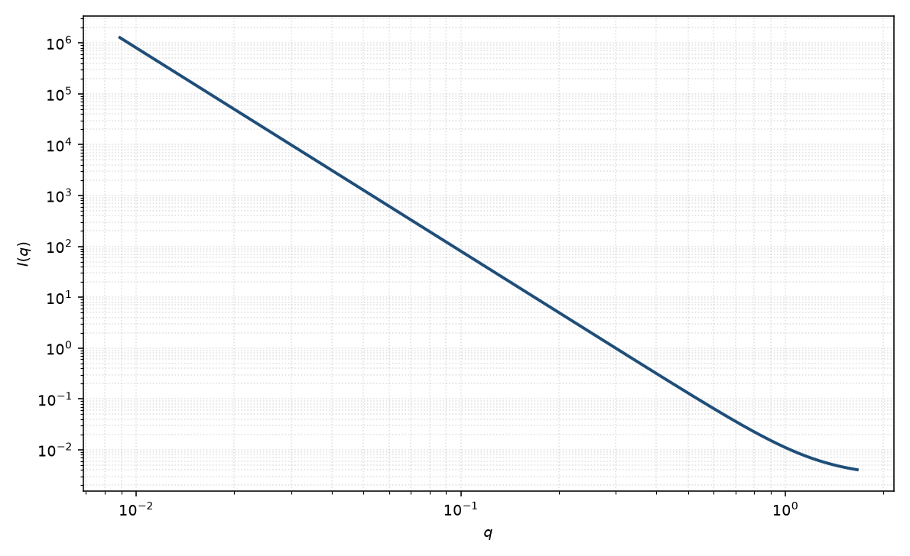

Porod
Porod
适用场景
高 $q$ 只看见界面时，Porod 定律把 $I\sim q^{-4}$ 的幅度连到比表面积。典型对象：锐利两相（孔材料、相分离聚合物、乳滴），以及形式因子振荡已经衰减、只剩界面尾的胶体。
判据：$\log I$–$\log q$ 上斜率接近 $-4$；Porod 图 $q^4 I(q)$ 趋向平台。斜率显著偏离 $-4$ 时，应改用表面分形、模糊界面或纯幂律，而不是强加 Porod 常数。
绝对强度下 Porod 不变量与两相衬度、体积分数相联系。没有绝对标定仍可谈指数，但不能把幅度读成真实面积。
物理图像
锐利界面上密度跳跃的三维 Fourier 变换给出 $q^{-4}$。前置因子是界面面积 $S$ 与衬度平方：光滑两相 $I(q)\to 2\pi(\Delta\rho)^2 S/q^4$。这与粒子外形无关，只要求界面在探测尺度上是光滑的。
表面粗糙或分形使指数变成 $D_s-6$。扩散界面（模糊球）使尾比 $q^{-4}$ 掉得更快。磁性若只在部分界面上有磁化跳跃，磁 Porod 面积不必等于核面积。
示意图

核心公式
出发点
高 $q$ 只分辨界面附近的密度跳跃。两相介质的 Debye 相关函数 $\gamma(r)$ 由衬度自相关定义，强度是它的三维 Fourier 变换：
$$I(q)=(\Delta\rho)^2\phi(1-\phi)V\int\gamma(r)\,\mathrm{e}^{i\mathbf{q}\cdot\mathbf{r}}\,\mathrm{d}^3r.$$若界面在探测尺度上锐利且局部可看成平面，$\gamma(r)$ 在 $r\to 0$ 有线性缺口，而不是更光滑的 $r^2$ 开头。正是这个非解析性决定了 $q^{-4}$ 尾。
推导
弦统计给出小 $r$ 展开。穿过锐利界面的随机弦使相关函数以面积为斜率下降：
$$\gamma(r)=1-\frac{S}{4\phi(1-\phi)V}\,r+O(r^2),\qquad r\to 0.$$常数项的 Fourier 变换是前向 $\delta$ 峰，与高 $q$ 无关。线性项 $|r|$ 在三维的分布意义下变换为 $-8\pi/q^4$。代入前置因子：
$$(\Delta\rho)^2\phi(1-\phi)V\cdot 8\pi\cdot\frac{S}{4\phi(1-\phi)V}\,\frac{1}{q^4}=\frac{2\pi(\Delta\rho)^2 S}{q^4}.$$等价的界面观点：局部平面上阶跃 $\Delta\rho$ 的一维变换 $\sim\Delta\rho/(q\mu)$（$\mu$ 为法向余弦），对法向取向平均后每个面积元贡献 $2\pi(\Delta\rho)^2\,\mathrm{d}S/q^4$，积分即同一结果。
低 $q$ 与渐近
Porod 是 $q\to\infty$ 的渐近，不是低 $q$ 公式。低 $q$ 由整体尺寸或 $\xi$ 控制（Guinier、DAB 等）。检验用 Porod 图：$q^4(I-B)\to 2\pi(\Delta\rho)^2 S$ 出现平台。
光滑面 $D_s=2$ 时指数恰为 $4$。粗糙表面把小 $r$ 的线性改成 $r^{3-D_s}$，指数变成 $6-D_s$。扩散界面（误差函数型轮廓）使尾掉得比 $q^{-4}$ 更快。观测强度再加本底 $B$。
参数表
| 参数 | 符号 | 含义 | 单位 | 典型范围 |
|---|---|---|---|---|
| 界面面积 | $S$ | 照射体积内总界面 | Å$^2$ 或 cm$^{-1}$（比表面积） | 由绝对强度约束 |
| 衬度 | $\Delta\rho$ | 两相 SLD 差 | Å$^{-2}$ | 由组成或对比实验 |
| 标度 / 本底 | $\mathrm{scale}$, $B$ | 前置因子与常数本底 | 与强度单位一致 | 实验相关 |
拟合注意
取向：粉末平均已经包含在 $q^{-4}$ 里。高度取向的片或纤维应回到二维 Porod，指数和前置因子都会变。
多分散不改变渐近指数，但改变到达 Porod 区的 $q$。界面厚度或多分散“模糊”会让 $q^4 I$ 继续下降。磁性通道的 Porod 只看见磁化跳跃面。
可辨识性：本底 $B$ 与 Porod 幅度强相关，须先在足够高的 $q$ 约束 $B$。把 $-3$ 到 $-4$ 之间的有效指数硬拟合成 $S$，会系统偏面积。
相近模型
参考文献
- Porod, G. Die Röntgenkleinwinkelstreuung von dichtgepackten kolloiden Systemen. Kolloid-Z. 1951, 124, 83–114. DOI: 10.1007/BF01512792
- Guinier, A.; Fournet, G. Small-Angle Scattering of X-rays. Wiley: New York, 1955.